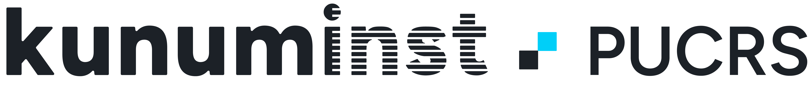

Funded by Kunumi · PUCRS Financiado pela Kunumi · PUCRS
Funded by Financiamento

The project aims to investigate and develop new machine learning techniques with low computational cost applied to Large Language Models (LLMs). It focuses on three main axes: inference-time model editing (model editing/steering), machine unlearning, and context window extrapolation. The research seeks to create efficient methods to modify or update already-trained LLMs, allowing information to be corrected, new knowledge to be incorporated, or specific content to be removed without the need for extensive or expensive retraining.
In parallel, the project proposes selective unlearning mechanisms, enabling the controlled and traceable removal of unwanted data from the model, contributing to questions of privacy, security, and model governance. Finally, it explores context window extrapolation, an approach that aims to let LLMs trained on short contexts operate effectively over much longer contexts, expanding their capabilities without proportionally increasing the cost of training.
Together, these research lines aim to make experimentation with LLMs more accessible, sustainable, and adaptable, promoting theoretical and practical advances in machine learning under resource constraints.
O projeto tem como objetivo investigar e desenvolver novas técnicas de aprendizado de máquina de baixo custo computacional aplicadas a Modelos de Linguagem de Grande Escala (LLMs). O foco está em três eixos principais: edição de modelos em tempo de inferência (model editing/steering), desaprendizado de máquina (machine unlearning) e extrapolação de janelas de contexto. A pesquisa busca criar métodos eficientes para modificar ou atualizar LLMs já treinados, permitindo corrigir informações, incorporar novos conhecimentos ou remover conteúdos específicos sem necessidade de retreinamentos extensos ou caros.
Em paralelo, o projeto propõe mecanismos de desaprendizado seletivo, viabilizando a remoção de dados indesejados do modelo de forma controlada e rastreável, contribuindo para questões de privacidade, segurança e governança de modelos. Por fim, será explorada a extrapolação de janelas de contexto, uma abordagem que visa permitir que LLMs treinados com contextos curtos operem de maneira eficaz em contextos muito mais extensos, ampliando suas capacidades sem aumentar proporcionalmente o custo de treinamento.
Em conjunto, essas linhas de pesquisa buscam tornar a experimentação com LLMs mais acessível, sustentável e adaptável, promovendo avanços teóricos e práticos na área de aprendizado de máquina sob restrições de recursos.
Inference-time Model Editing Edição de Modelos em Tempo de Inferência
Model editing/steering: correcting information and incorporating new knowledge in trained LLMs without expensive retraining. Model editing/steering: corrigir informações e incorporar novos conhecimentos em LLMs já treinados sem retreinamentos caros.
Machine Unlearning Desaprendizado de Máquina
Selective, controlled, and traceable removal of unwanted data, supporting privacy, security, and model governance. Remoção seletiva, controlada e rastreável de dados indesejados, apoiando privacidade, segurança e governança de modelos.
Context Window Extrapolation Extrapolação de Janelas de Contexto
Letting LLMs trained on short contexts operate effectively over much longer ones, without proportionally raising training cost. Permitir que LLMs treinados com contextos curtos operem de forma eficaz em contextos muito mais extensos, sem aumentar proporcionalmente o custo de treinamento.